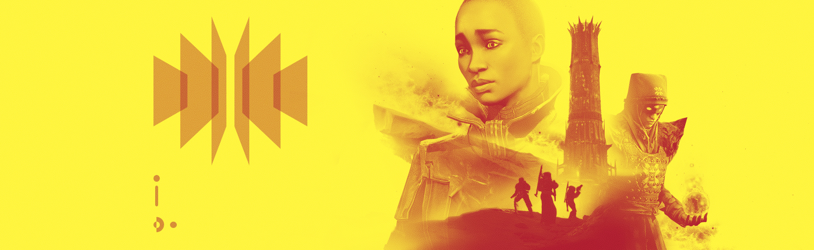

Written from the perspective of Eris Morn
It’s been a long while since I’ve been to the Tower. Much has changed. I pray my departure hasn’t created an irreparable fracture.
Ikora… you must forgive me.
I’ll tell her what I’ve uncovered—where I’ve been. She’ll see the meaning behind my actions.
Ikora Rey: “When I heard your ship was approaching, I didn’t believe it. Yet here you stand. It’s good to see you.”
Eris Morn: “Ikora, my absence was necessary. What I have learned, discovered... Danger lurks closer than you realize. You must trust me. We’ve stood too long ignorant of the cataclysm brewing before us. If we do not act, we face yet another Collapse. We must attend to that which the Hive have unearthed down below the lunar surface—”
I: “Eris. Breathe.”
Her words bring a fleeting rush of relief.
I: “We know about the Hive, as well as their recently erected Keep .”
A Keep ? They mobilize. It’s far worse than I knew.
E: “Then you will come with me, Ikora.”
I: “Eris, you’ve barely had a moment to rest.”
E: “You must let me show you the truth. Then you will understand.”
I: “I have responsibilities here. A lot has transpired in your absence. We’re still recovering from our… losses.”
What lies behind pales in comparison to what we face ahead.
But I won’t fight with her. Not again.
E: “Then I will go alone.”
I: “Eris...”
E: “On this I cannot negotiate.”
I can see Ikora measure her options. She does not seek an argument either.
I: “At least allow me to help you mount an adequate response to a threat that, mind you, we don’t fully understand. Let the Vanguard support you.”
That will take time. Always time. The one element we don’t have the luxury of.
I: “But you’ll be gone before they can mobilize, won’t you?”
E: “We all do what we must.”
I: “Promise you’ll stay in communication with me. I don’t want this to be like last time.”
I nod to Ikora. Always the beacon of benevolence.
She deserves more than I can offer. My calling is not here. There is still work to be done. One last stop.
E: “I have to go.”
Her concern is palpable. It reassures me, oddly. The wound between us can heal. If we live long enough.
I: “Eris… This thing you’re willing to risk everything for… What is it?”
E: “I warned of a storm. Can’t you hear the thunder?”